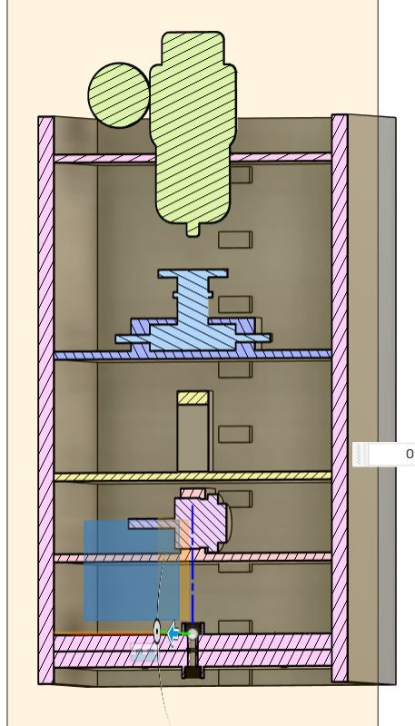

ADHD Medication Reminder System
A portable pill station that reminds adults with ADHD to take their medication with lights, sound and an LCD, and logs each dose to a companion website.
↗ View projectI'm a student at Duke University studying Biomedical Engineering. I like the part of engineering where hardware meets people — medical devices, lab instruments and robots that have to work for real users on a real budget. I CAD in Onshape and Fusion 360, wire with Raspberry Pi, and code in Python, Java and C++.
Sheet 02 / 03 — Project drawings
A portable pill station that reminds adults with ADHD to take their medication with lights, sound and an LCD, and logs each dose to a companion website.
↗ View project
A bench instrument that measures the pore size of tissue samples by pushing air through them and tracking how flow responds to pressure.
↗ View projectWith Duke MEDesign: designing an affordable alternative to commercial endoscopy anchors for low-income communities and low-resource health systems.
Sep 2025 – presentAppendix — Earlier work
Four seasons on FIRST Tech Challenge Team 516 Gears of Fire, finishing as Head of CAD. This is where I learned to design, build, break and rebuild things.

2024–25. Our first fully custom robot, with four-stage slides, a 360° claw and a worm-gear hang. I was Head of CAD.
↗ View project
2023–24. A fast-cycling robot that set a temporary Florida state record of 267 points and reached the FIRST World Championship.
↗ View projectSheet 03 / 03 — Contact
I'm looking for research and internship opportunities in biomedical engineering. If you have a question or just want to say hi, my inbox is open.
Say hello →